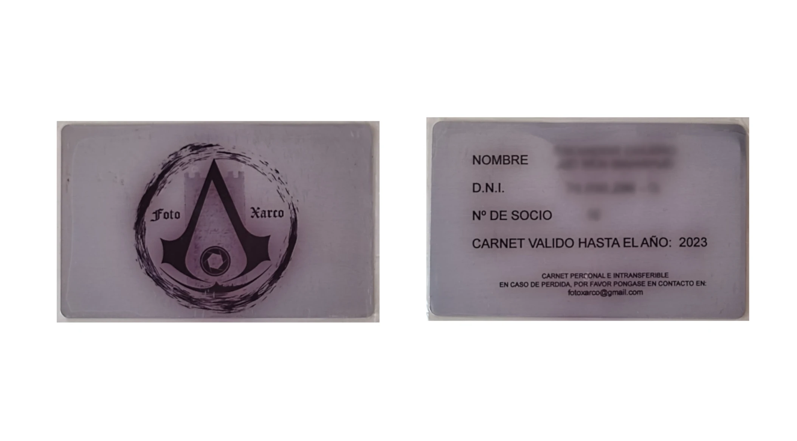

Alta de Socios
Hazte Socio de Fotoxarco
¿Te apasiona la fotografía? ¿Quieres formar parte de una comunidad activa, compartir tus trabajos, participar en exposiciones, talleres y salidas fotográficas? ¡Únete a Fotoxarco!
Ventajas de ser socio
- Participación en exposiciones colectivas y concursos.
- Acceso a talleres, charlas y actividades formativas.
- Salidas fotográficas y encuentros con otros fotógrafos/as.
- Difusión de tus trabajos a través de nuestras redes y web.
- Formar parte activa de la vida cultural de la Axarquía.
Cuota anual
La cuota de socio es de 38 euros al año.
¿Cómo hacerte socio?
- Descarga y rellena el formulario de inscripción.
- Envíalo firmado a nuestro correo: fotoxarco@gmail.com
- Te responderemos con los datos para realizar el pago de la cuota.
¿Tienes dudas?
No dudes en contactarnos para resolver cualquier pregunta. Estamos encantados de darte la bienvenida a la familia Fotoxarco.
Correo: fotoxarco@gmail.com
